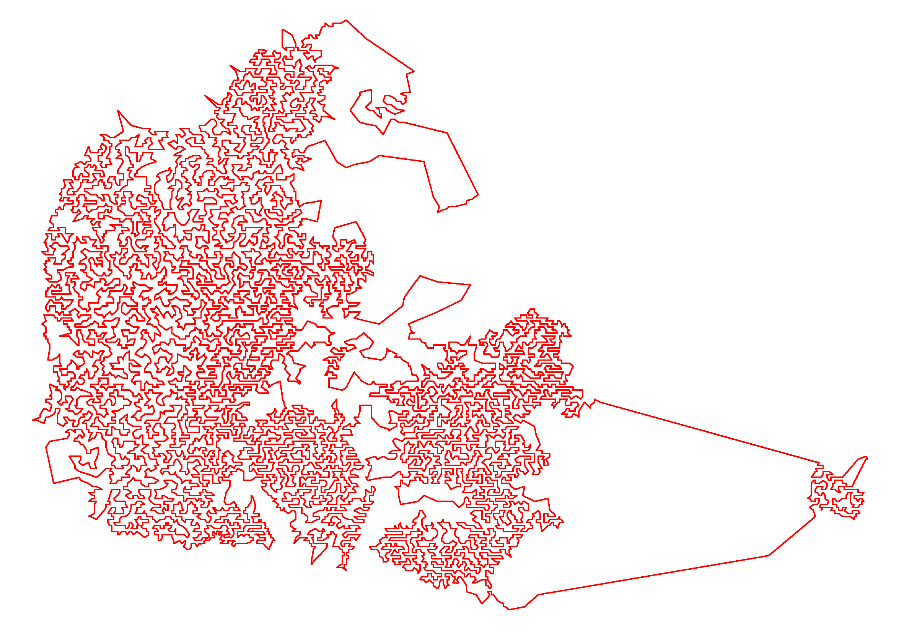

LKH
Version 2.0.9 (July 2018)
 LKH is an effective implementation of the Lin-Kernighan heuristic for solving the traveling salesman problem.
Computational experiments have shown that LKH is highly effective. Even though the algorithm is approximate, optimal solutions are produced with an impressively high frequency. LKH has produced optimal solutions for all solved problems we have been able to obtain; including a 109399-city instance (at the time of writing, the largest nontrivial instance solved to optimality). Furthermore, the algorithm has improved the best known solutions for a series of large-scale instances with unknown optima, among these a 1,904,711-city instance (World TSP).
The DIMACS TSP Challenge (2000) provided many benchmark instances. Their sizes range from 1,000 to 10,000,000 cities. LKH currently holds the record for all instances with unknown optima. The lengths of the current best tours are tabulated here.
David Soler has provided 126 asymmetric instances with known optima. LKH's performance on these instances is reported here..
Stefan Hougardy and Xianghui Zhong have provided hard to solve instances of the Euclidean traveling salesman problem. Instances of this type with up to 100,000 cites may be downloaded here. The best LKH solutions are tabulated here.
LKH has been described in the reports
K. Helsgaun,
An Effective Implementation of the Lin-Kernighan Traveling Salesman Heuristic.
DATALOGISKE SKRIFTER (Writings on Computer Science), No. 81, 1998,
Roskilde University.K. Helsgaun,
An Effective Implementation of K-opt Moves for the Lin-Kernighan TSP Heuristic.
DATALOGISKE SKRIFTER (Writings on Computer Science), No. 109, 2006,
Roskilde University (Revised November 2007).K. Helsgaun,
An Extension of the Lin-Kernighan-Helsgaun TSP Solver for Constrained Traveling
Salesman and Vehicle Routing Problems.
Technical Report, Computer Science, Roskilde University, 2017.K. Helsgaun,
Using POPMUSIC for Candidate Set Generation in the Lin-Kernighan-Helsgaun TSP Solver.
Technical Report, Computer Science, Roskilde University, 2018.
and in the papers
K. Helsgaun,
An Effective Implementation of the Lin-Kernighan Traveling Salesman Heuristic.
European Journal of Operational Research, 126(1):106-130 (2000).K. Helsgaun,
General k-opt submoves for the Lin-Kernighan TSP heuristic.
Mathematical Programming Computation, 1(2-3):119-163 (2009).É. D. Taillard and K. Helsgaun,
POPMUSIC for the Travelling Salesman Problem.
European Journal of Operational Research, In Press (2018).
R. Tinós, K. Helsgaun, and D. Whitley,
Efficient Recombination in the Lin-Kernighan-Helsgaun Traveling Salesman Heuristic.
PPSN XV, Proceedings I, pp. 95-107 (2018).
A list of scientific applications of LKH may be seen here.
Installation
LKH has been implemented in the programming language C. The software is entirely written in ANSI C and portable across a number of computer platforms and C compilers.
The code can be downloaded here: LKH-2.0.9.tgz (gzipped tar file, approximately 1.5 MB).
On a Unix/Linux machine execute the following commands:tar xvfz LKH-2.0.9.tgz
cd LKH-2.0.9
makeAn executable file called LKH will now be available in the directory LKH-2.0.9.
A stand-alone executable for Windows machines may be downloaded here. A Visual Studio 2019 project is available here. Another possibility is to build an executable using Cygwin (a Linux-like environment for Windows).
The code is distributed for academic and non-commercial use. The author reserves all rights to the code.
LKH-3, an extension of LKH-2 for solving constrained traveling salesman and vehicle routing problems, is available here.
CHANGES IN LKH-2.0.9:
Candidate sets may now be created by means of POPMUSIC by giving the following specification in the parameter file for LKH:
CANDIDATE_SET_TYPE = POPMUSIC
The value of the parameter MAX_CANDIDATES is used to trim the candidate set. There are, however, some other POPMUSIC related parameters. If not specified, they will take their default values. These parameters are:
POPMUSIC_SAMPLE_SIZE = <int>
Sample size.
Default: 10POPMUSIC_SOLUTIONS = <int>
Number of solutions to generate.
Default: 50POPMUSIC_MAX_NEIGHBORS = <int>
Maximum number of nearest neighbors used as candidates in iterated 3-opt for
POPMUSIC.
Default: 5POPMUSIC_TRIALS = <int>
Number of trials used in iterated 3-opt for POPMUSIC. If the value is zero, the number of trials is the size of the subpath to be optimized.
Default: 1POPMUSIC_INITIAL_TOUR = { YES | NO }
Specifies whether the first generated POPMUSIC tour is used as initial tour for Lin-Kernighan.
Default: NOCHANGES IN VERSION 2.0.8:
Tours may now be recombined by GPX2 (Generalized Partition Crossover 2) instead of IPT (Iterative Partial Transcription).
GPX2 is used by giving the following specification in the parameter file:
RECOMBINATION = GPX2
The possible settings are:
RECOMBINATION = { IPT | GPX2 }
IPT is default.
The GPX2 code has been written by Renato Tinós and adapted for LKH by Keld Helsgaun.
New edge weight types:
FLOOR_2D
FLOOR_3D
TOR_2D
TOR_3DCHANGES IN VERSION 2.0.7:
Added an approximate K-center clustering algorithm for tour partitioning (new keyword: K-CENTER). Improved performance on HCP and HPP instances.
CHANGES IN VERSION 2.0.6:
The replacement strategy (CD/RW) proposed by Lozano, Herrera and Cano for preserving useful diversity in steady-state genetic algorithms has been added.
CHANGES IN VERSION 2.0.5:
Guibas and Stolfi's implementation of Delaunay triangulation has been replaced by a faster implementation made by Geoff Leach.
CHANGES IN VERSION 2.0.4:
Added multi-level compression of subproblems (Version 2.0.3 allowed only one level).
CHANGES IN VERSION 2.0.3:
A simple genetic algorithm has been added. New keyword: POPULATION_SIZE. Tours found by the first POPULATION_SIZE runs constitute an initial population of tours. In each of the remaining runs two tours (parents) from the current population is recombined into a new tour (child) using a variant of the Edge Recombination Crossover (ERX). The parents are chosen with random linear bias towards the best members of the population. The child is used as initial tour for the next run. If this run produces a tour better than the worst tour of the population, then the resulting tour replaces the worst tour. Premature convergence is avoided by requiring that all tours in the population have different costs.
CHANGES IN VERSION 2.0.2:
Minor changes in the code for solving subproblems. Added tour construction heuristic based on Moore's space-filling curve. New keyword: MOORE.
CHANGES IN VERSION 2.0.1:
Improved distance caching and faster add/delete testing for k-opt moves. This speeds up the execution by 5-10 percent.
CHANGES IN VERSION 2.0 (November 2007):
The new version extends the previous one by data structures and algorithms for solving very large instances, and by facilities for obtaining solutions of even higher quality. Many changes have been made. Below is given a short description of the new features.
1. General k-opt moves
One of the most important means in LKH-2 for obtaining high-quality solutions is its use of general k-opt moves. In the original version of the Lin-Kernighan algorithm moves are restricted to those that can be decomposed into a 2- or 3-opt move followed by a (possible empty) sequence of 2-opt moves. This restriction simplifies implementation but it needs not be the best design choice if high-quality solutions are sought. This has been demonstrated with LKH-1, which uses a 5-opt sequential move as the basic move component. LKH-2 takes this idea a step further. Now k-opt moves can be used as sub-moves, where K is any chosen integer greater than or equal to 2 and less than the number of cities. Each sub-move is sequential. However, during the search for such moves, non-sequential moves may also be examined. Thus, in contrast to the original version of the Lin-Kernighan algorithm, non-sequential moves are not just tried as last resort but are integrated into the ordinary search.
2. Partitioning
In order to reduce the complexity of solving large-scale problem instances, LKH-2 makes it possible to partition a problem into smaller subproblems. Each subproblem is solved separately and its solution is used (if possible) to improve a given overall tour. Even the solution of small problem instances may sometimes benefit from partitioning as it helps in focusing in the search process. Currently, LKH-2 implements the following five partitioning schemes: Tour segment partitioning, Karp partitioning, Delaunay partitioning, K-means partitioning, and Sierpinski partitioning.
3. Tour merging
LKH-2 provides a tour merging procedure that attempts to produce the best possible tour from two or more given tours using local optimization of an instance that includes all tour edges, and where edges common to the tours are fixed. Tours that are close to optimal typically share many common edges. Thus, the input graph for this instance is usually very sparse, which makes it practicable to use k-opt moves for rather large values of k.
4. Iterative partial transcription
Iterative partial description is a general procedure for improving the performance of a local search based heuristic algorithms. It attempts to improve two individual solutions by replacing certain parts of either solution by the related parts of the other solution. The procedure may be applied to the TSP by searching for subchains of two tours, which contains the same cities in a different order and have the same initial and final cities. LKH-2 uses the procedure on each locally optimal tour and the up to now best tour. The implemented algorithm is a simplified version of the algorithm described by Möbius, Freisleben, Merz and Schreiber.
5. Backbone-guided search
The edges of the tours produced by a fixed number of initial trials may be used as candidate edges in the succeeding trials. This algorithm, which is a simplified version of the algorithm given by Zhang and Looks, has turned out to be particularly effective for VLSI instances.
6. Data structures and algorithms for solving very large instances
Delaunay triangulation may be used to speed up the determination of alpha-nearest candidate edges, and tours may be represented internally by three-level trees.
New keywords:
BACKBONE_TRIALS = <integer>
BACKTRACKING = {YES | NO }
CANDIDATE_SET_TYPE = {ALPHA | DELAUNAY [PURE ] | NEAREST-NEIGHBOR | QUADRANT }
EXTRA_CANDIDATES = <integer> [SYMMETRIC ]
EXTRA_CANDIDATE_SET_TYPE = {NEAREST-NEIGHBOR | QUADRANT }
GAIN_CRITERION = {YES | NO }
INITIAL_TOUR_ALGORITHM = {BORUVKA | GREEDY | NEAREST-NEIGHBOR | QUICK-BORUVKA | SIERPINSKI | WALK }
INITIAL_TOUR_FRACTION = <real in [0;1]>
KICKS = <integer>
KICK_TYPE = <integer>
MAX_BREADTH = <integer>
MERGE_TOUR_FILE = <string>
NONSEQUENTIAL_MOVE_TYPE = <integer>
PATCHING_A = <integer> [RESTRICTED | EXTENDED ]
PATCHING_C = <integer> [RESTRICTED | EXTENDED ]
SUBPROBLEM_SIZE = <integer> [DELAUNAY | KARP | K-MEANS | ROHE | SIERPINSKI ] [COMPRESSED ] [BORDERS ]
SUBPROBLEM_TOUR_FILE = <string>}
SUBSEQUENT_MOVE_TYPE = <integer>
SUBSEQUENT_PATCHING = {YES | NO }
# <string>Removed keywords:
BACKTRACK_MOVE_TYPE
MERGE_TOUR_FILE_1
MERGE_TOUR_FILE_2A short description of the parameters to LKH-2.0 may be found here.
CHANGES IN VERSION 1.3:
The distance type GEOM has been added (see http://www.tsp.gatech.edu/world/).
Additional control information may now be given in the parameter file by means of the following keywords:
BACKTRACK_MOVE_TYPE
CANDIDATE_FILE
INITIAL_TOUR_FILE
MAX_SWAPS
MERGE_TOUR_FILE_1
MERGE_TOUR_FILE_2
RESTRICTED_SEARCHCHANGES IN VERSION 1.2:
Execution times are measured more accurately, if the getrusage function is supported by the system.CHANGES IN VERSION 1.1:
The code has been made more robust regarding the solution of asymmetric problems. The previous code could loose its way in some cases due to integer overflow.
[home]